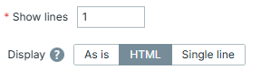
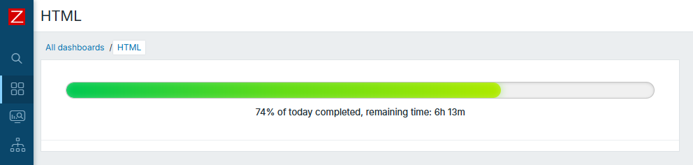
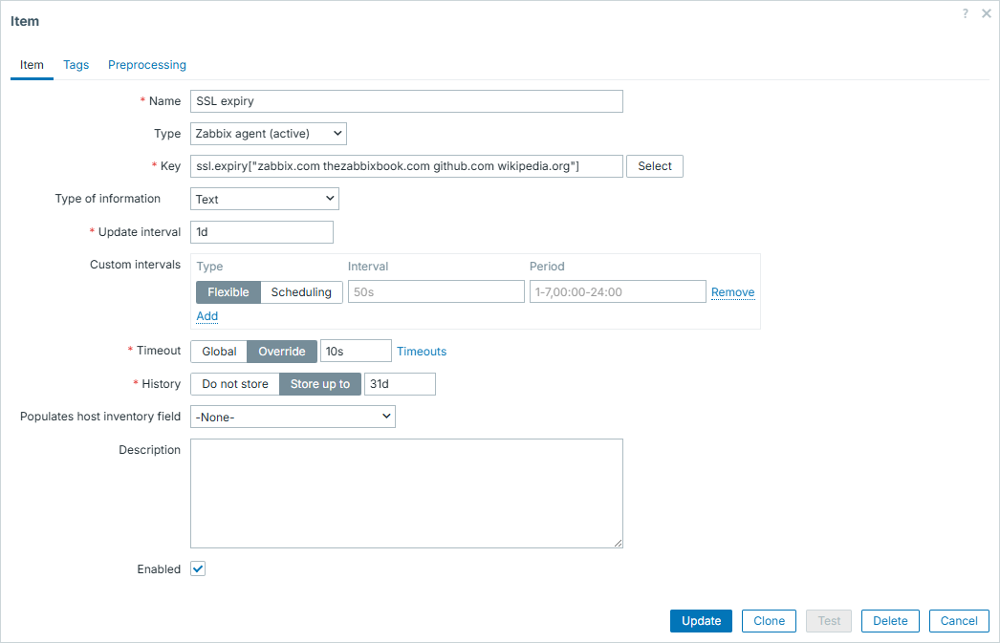
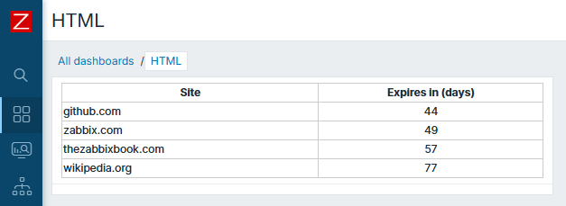
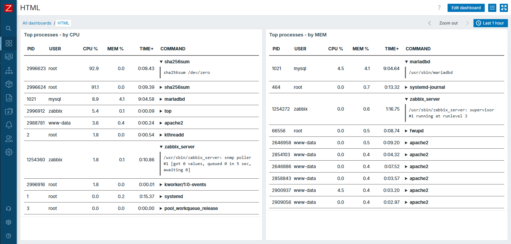
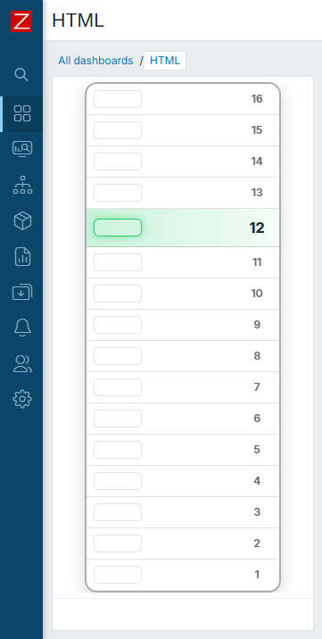

HTML for the win
HTML? Why HTML? What it has to do with Zabbix other than being a part of its GUI you may ask?
Well, there is one overlooked feature which allows you to display things in as many different custom ways as your imagination (or HTML limitations) allows you to. That widget is "Item history", but with these two options taken into consideration:

Our goal here is to form a valid HTML code for an item value - this allows us to feed it into "Item history" widget and let Zabbix display it not as a plain text, but treat it as an HTML.
Why this matters so much is because it allows you to build some custom ways of displaying things without any real programming skills needed (opposite to developing some new widget from scratch). You just need to know HTML. And, preferably, some CSS - because this is how you can incorporate this way of displaying data into your dashboards extremely smoothly.
All of the examples below will be based on UserParameter functionality. By
now you should already know how to create one; if not - go to Chapter 09:
Extending Zabbix -> User Parameters. However, this is not the only way to form
it - you could also use zabbix_sender to update item or possibly even do it
with some JavaScript preprocessing. Main idea is to have item which stores
some meaningful HTML code, how you achieve it - doesn't matter that much.
All items in the examples are "Text" type of items. Creation of them via GUI will not be discussed - unless there is something worth to note - since there is nothing special about them from this perspective.
Info
Keep in mind that Zabbix provides multiple ways of displaying things natively thus if you are happy with what is already available out-of-the-box - you don't need all of this. However, the more you use the tool, the more situations you will face when you need "slightly different" or "radically different" way to display things. That is exactly when this approach becomes handy.
Hello World
For starters, let's create something very simple. This script will create progress-bar type of display of how much time did we spend today so far:
Hello World script
#!/bin/bash
now=$(($(date +%s)-$(date -d "today 00" +%s)))
pct=$((now*100/86400))
remaining=$((86400-now))
rh=$((remaining/3600))
rm=$(((remaining%3600)/60))
cat <<EOF
<div style="padding:25px;">
<div style="width:100%;">
<div style="height:22px;border-radius:999px;overflow:hidden;border:1px solid rgba(128,128,128,.4);background:rgba(128,128,128,.12);box-shadow:inset 0 1px 4px rgba(0,0,0,.12);">
<div style="width:${pct}%;height:100%;border-radius:999px;background:linear-gradient(90deg,#00c853 0%,#64dd17 50%,#aeea00 100%);box-shadow:0 0 12px rgba(100,221,23,.45),inset 0 0 8px rgba(255,255,255,.25);">
</div>
</div>
<div style="margin-top:10px;text-align:center;font-size:13px;">
${pct}% of today completed, remaining time: ${rh}h ${rm}m
</div>
</div>
</div>
EOF
exit 0
Now look at the result. Isn't it beautiful?

Warning
Keep in mind Zabbix has light and dark themes, so pick colours that suits well on both dark and light, especially if dashboard is to be used by multiple users who have their own preferences towards which theme is better
Tables
There are countless use cases when you want to display things in a table-like
form, thus <table> ... </table> approach makes it most iconic out of them all
here. Tables are structured data display, which is what we often want when
talking about displaying monitoring data. Besides that, with tables, you can
easily display sorted output, so show "top" of something.
Say we want to collect and display when the SSL certificate is expiring for many different websites. Of course, we can do it individually for all of them and choose the way to display it (even graph is good enough for it). However, table type of display is just perfect as you can sort by the ones that will end sooner. So here we have a script that forms HTML output:
Script for table
#!/bin/bash
ssl_expiry() {
local expires
expires=$(timeout 2 openssl s_client -connect "$1:443" \
-servername "$1" </dev/null 2>/dev/null \
| openssl x509 -noout -dates 2>/dev/null \
| grep '^notAfter=')
if [[ -n "${expires}" ]]; then
echo $(( ($(date -d "${expires#notAfter=}" +%s) - $(date +%s)) / 86400 ))
else
echo "-1"
fi
}
[[ $1 == "" ]] && exit 1
websites=($1)
result="<table style='width:100%; border-collapse:collapse;'>"
result+="<thead>
<tr>
<th style='border:1px solid #ccc;'>Site</th>
<th style='border:1px solid #ccc;'>Expires in (days)</th>
</tr>
</thead>
<tbody>"
for site in "${websites[@]}"; do
expires+="$site $(ssl_expiry "$site")"$'\n'
done
while read line; do
line=(${line})
result+="<tr>
<td style='border:1px solid #ccc;'>${line[0]}</td>
<td style='border:1px solid #ccc; text-align: center;'>${line[1]}</td>
</tr>"
done <<< "$(sort -k2n <<< "${expires}" | grep -v "^$")"
result+="</tbody></table>"
echo "${result}"
exit 0
Here is the configuration on Zabbix GUI - worth to note that we provide list of websites straight from here:

And here is the result:

Output of top and cmdline
Another, more advanced example - table with expandable row sections. Here we
will combine output of top command with some more details about specific
process from /proc/$pid/cmdline.
In the end, it's nothing much more complex than previous one - just know what
you want to achieve, be able to do it and and employ HTML capabilities to
display it. In this case - by additional help of <details> element.
Script for advanced table
#!/bin/bash
sort_by="${1:-CPU}"
escape() {
sed 's/&/\&/g;s/</\</g;s/>/\>/g'
}
cat <<'HTML'
<table style="width:100%;table-layout:fixed;border-collapse:collapse;font-size:13px;color:inherit;">
<thead>
<tr>
<th style="width:8%;padding:10px;border-bottom:2px solid #666;text-align:left;">PID</th>
<th style="width:12%;padding:10px;border-bottom:2px solid #666;text-align:left;">USER</th>
<th style="width:10%;padding:10px;border-bottom:2px solid #666;text-align:right;">CPU %</th>
<th style="width:10%;padding:10px;border-bottom:2px solid #666;text-align:right;">MEM %</th>
<th style="width:12%;padding:10px;border-bottom:2px solid #666;text-align:right;">TIME+</th>
<th style="width:48%;padding:10px;border-bottom:2px solid #666;text-align:left;">COMMAND</th>
</tr>
</thead>
<tbody>
HTML
top -b -n1 -o "%$sort_by" | head -17 | tail -10 |
while read -r pid user _ _ _ _ _ _ cpu mem timep cmdrest; do
cmd=$(ps -p "$pid" -o comm= 2>/dev/null)
[ -z "$cmd" ] && cmd="$cmdrest"
[[ -r /proc/$pid/cmdline ]] && fullcmd=$(tr '\0' ' ' < "/proc/$pid/cmdline" 2>/dev/null)
[ -z "$fullcmd" ] && fullcmd="$cmd"
cmd=$(printf '%s' "$cmd" | escape)
fullcmd=$(printf '%s' "$fullcmd" | escape)
printf '
<tr>
<td style="padding:8px;border-bottom:1px solid #666;overflow:hidden;white-space:nowrap;">%s</td>
<td style="padding:8px;border-bottom:1px solid #666;overflow:hidden;white-space:nowrap;">%s</td>
<td style="padding:8px;border-bottom:1px solid #666;text-align:right;">%s</td>
<td style="padding:8px;border-bottom:1px solid #666;text-align:right;">%s</td>
<td style="padding:8px;border-bottom:1px solid #666;text-align:right;">%s</td>
<td style="padding:8px;border-bottom:1px solid #666;overflow:hidden;">
<details>
<summary style="cursor:pointer;font-weight:600;white-space:nowrap;overflow:hidden;text-overflow:ellipsis;">%s</summary>
<div style="margin-top:6px;padding:8px;border-left:3px solid #666;font-family:monospace;white-space:pre-wrap;word-break:break-word;overflow-wrap:anywhere;">%s</div>
</details>
</td>
</tr>
' "$pid" "$user" "$cpu" "$mem" "$timep" "$cmd" "$fullcmd"
done
echo '</tbody></table>'
exit 0
Result:

Vertical position
As you can guess, the list of those examples can go on and on. Here are some more areas where this approach would also suit well:
- traffic light type of display, like "go / no-go" for something
- combination of progress and table, for example displaying some parallel processing as a table, where each row would have some progress bar or color of completeness (like green - processed, yellow - in progress, red - error)
- something completely "outside the box"
One last example, just for fun. Example for this "thinking outside the box". But you might find a similar real world use case and apply it as a prototype.
Let's assume we have a 16 storey building with an elevator. We can determine its current floor at any given moment and we want to visualize it.
Script for vertical position
#!/bin/bash
floor=$((RANDOM % 16 + 1))
cat <<'HTML_HEAD'
<div style="
width:220px;
margin:auto;
color:inherit;
">
<div style="
border-radius:14px;
border:2px solid rgba(120,120,120,0.6);
overflow:hidden;
box-shadow:0 6px 18px rgba(0,0,0,0.15);
">
HTML_HEAD
active_style='display:flex;align-items:center;height:42px;background:linear-gradient(90deg, rgba(46,204,113,0.25), rgba(46,204,113,0.05));border-bottom:1px solid rgba(120,120,120,0.3);'
active_light='width:52px;margin-left:8px;height:18px;border-radius:6px;border:1px solid #2ecc71;box-shadow:0 0 10px rgba(46,204,113,0.5);'
active_num='width:50px;text-align:center;font-weight:800;font-size:16px;'
inactive_style='display:flex;align-items:center;height:34px;border-bottom:1px solid rgba(120,120,120,0.2);'
inactive_light='width:52px;margin-left:8px;height:18px;border-radius:4px;border:1px solid rgba(120,120,120,0.4);opacity:0.5;'
inactive_num='width:50px;text-align:center;opacity:0.7;font-weight:600;'
for ((f=16; f>=1; f--)); do
if [ "$f" -eq "$floor" ]; then
printf ' <div style="%s"><div style="%s"></div><div style="flex:1;"></div><div style="%s">%d</div></div>\n' \
"$active_style" "$active_light" "$active_num" "$f"
else
printf ' <div style="%s"><div style="%s"></div><div style="flex:1;"></div><div style="%s">%d</div></div>\n' \
"$inactive_style" "$inactive_light" "$inactive_num" "$f"
fi
done
cat <<'HTML_TAIL'
</div>
</div>
HTML_TAIL
exit 0
Result:

Conclusion
Most likely it is obvious from the provided examples, that results look like some brand new widgets being used. You will definitely receive questions like "What is this widget you are using here, looks awesome!", to which you can proudly answer "Item history!". This approach, involving no more than default Zabbix features and HTML / CSS, is the easiest way to implement some custom forms of displaying things in Zabbix. Just use your imagination!